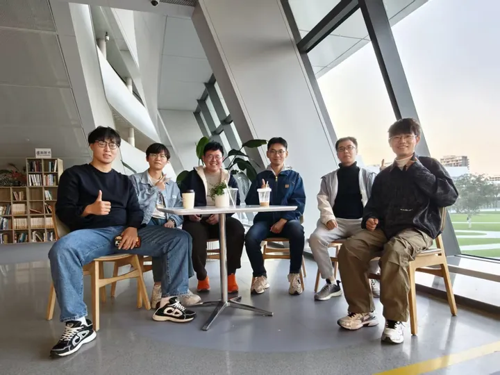

AI INTERDISCIPLINARY SCIENCE CLUB / 西湖大学
不同的学科，
共同的未知。



SCIENCE × TECHNOLOGY × PEOPLE跨学科的好奇心，是我们的共同语言。
01 / THE CONVERSATION CONTINUES
正在探索的问题FIELD NOTES
每周相聚RECENT ENTRIES
2026.06.04AI 独居应用
从安全、健康到情感支持，AI 如何进入日常生活？
AI 意识
借助人工智能，重新理解生物智能与认知机制。
AI 最新进展
关注本周 AI 热点，交换不同学科的观察与看法。
23 次日常相聚问题持续生长，讨论始终开放。
02 / MEET THE COLLECTIVE
保持开放。持续追问。
让交叉，真正发生。
AI交叉科学社是西湖大学的跨学科学生社团。我们关心模型与工具，也关心技术如何改变科研、教育，以及人与世界的关系。无论你的研究方向是什么，都可以带着问题加入讨论。
更多关于我们 ↗
AI FOR SCIENCECREATIVE TOOLSHUMAN × AI